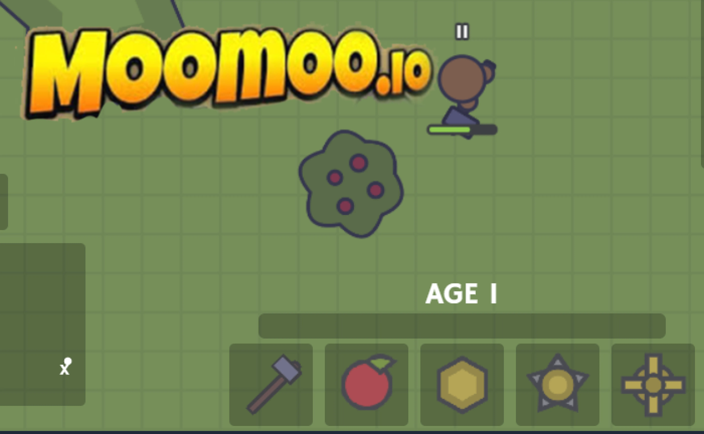
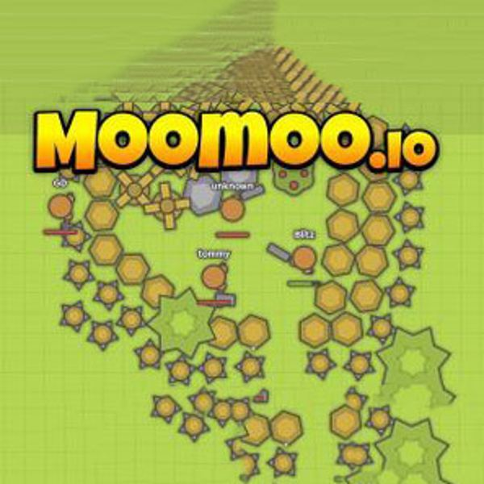

Introduction
AdventureMoomoo.io is a thrilling multiplayer animal sandbox survival game where players gather resources, craft powerful weapons, and build thriving villages. What makes it truly unique is its blend of fast-paced io-style combat with deep, persistent base-building mechanics. You start as a simple animal and evolve into a formidable warrior or a strategic village leader. Players love the game for its seamless blend of exploration, PvP skirmishes, and cooperative village building. Whether you are raiding enemy bases, farming resources on the minimap, or forming alliances in party chats, every match offers a fresh, dynamic experience. The charming animal avatars mask a surprisingly deep and ruthless survival ecosystem that keeps you coming back for more.
Getting Started

To begin your adventure, head to the official site and spawn into the world. Use W, A, S, D to move and your mouse to look around. Your primary goal is survival: approach trees, rocks, and bushes, then click or press Space to gather essential resources like wood, stone, and food. Press keys 1-9 or click your hotbar to select tools, weapons, or building materials. Quick-select your favorite food with Q to heal on the go, and toggle Auto Attack with E for efficient farming. To defend yourself, click to attack nearby hostile animals or rival players. As you collect resources, use them to craft better gear and place walls or traps to secure your territory. Don't forget to use R to ping the minimap for your team or C to add map markers for resource-rich zones. If you want to team up, use the Join Party feature to coordinate with friends and dominate the server together.
Basic Tips
1. Prioritize Food and Healing: Always keep your health up by pressing Q to quick-select berries or meat. A dead player drops all loot, so never explore without a full stomach. 2. Secure a Base Early: Use your gathered wood and stone to build a small, enclosed village. Place walls around your crafting stations to prevent rivals from stealing your hard-earned resources while you are out farming. 3. Upgrade Tools Immediately: Start with basic wooden tools, but rush to craft stone and iron gear. Upgraded weapons significantly increase your gathering speed and combat damage, giving you a massive early-game advantage. 4. Use the Minimap Strategically: Press R to ping resource clusters to your party members. This ensures your team efficiently clears the map without overlapping efforts, keeping everyone stocked on vital building materials. 5. Lock Rotation in Fights: Press X to lock your character's rotation when retreating or kiting. This prevents accidental camera spins that could ruin your escape route during intense PvP encounters.
Advanced Strategies

1. Map Marker Traps: Use the C key to add map markers. Trick enemies by placing fake markers on resource nodes, then build a hidden maze of traps and walls around that exact location to ambush greedy looters. 2. Auto-Attack Kiting: Combine the E key for Auto Attack with precise WASD movement. You can continuously deal damage to slower, heavy-hitting enemies while staying completely out of their melee range, effectively kiting them to death without taking damage. 3. Village Expansion Tactics: Don't just build a single box. Create interconnected villages with multiple choke points. Use the ESC key to quickly close windows and manage your inventory while moving between defensive layers, allowing you to repair walls rapidly during a siege. 4. Party Coordination: Assign specific roles in your party using the chat (Enter key). Have one player act as the gatherer while others build defensive perimeters, ensuring your village grows exponentially faster than solo players can react.
Pro Tips

1. Hotbar Optimization: Never rely on mouse clicks for combat. Pre-arrange your 1-9 slots so your highest DPS weapon, your primary food source (for Q quick-select), and your instant wall-building item are adjacent. Muscle memory wins fights. 2. The X-Key Desync: Use the Lock Rotation (X) feature right before an enemy strikes. It can sometimes cause their client-side prediction to miss, allowing you to slip through tight gaps in their village walls during a raid. 3. Minimap Radar: Keep your eyes on the minimap constantly. You can track enemy movements by watching their gather animations or combat pings from a distance, allowing you to flank or retreat before engaging.
Conclusion
AdventureMoomoo.io offers a perfect mix of fast-paced action and strategic base-building in a vibrant animal sandbox. Master the unique controls, build impenetrable villages, and form unbreakable alliances to conquer the server. Whether you are raiding enemies or farming peacefully, every match is a new challenge. Jump in, gather your first resources, and prove your ultimate survival skills today!